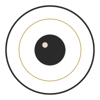

Kinan Faham (the Silent Camera) is a software engineer with a long pull toward the visual and sonic arts. He makes photographs and video that look for the extraordinary in the ordinary — the quiet things most of us walk past. The project borrows its stillness from Arvo Pärt’s tintinnabuli and its ethic from the Latin silentium est aureum: silence is golden.